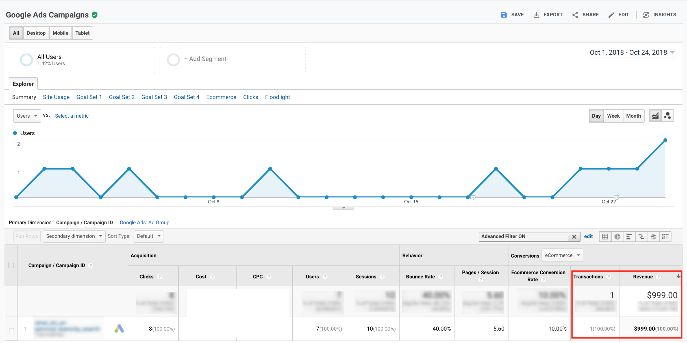
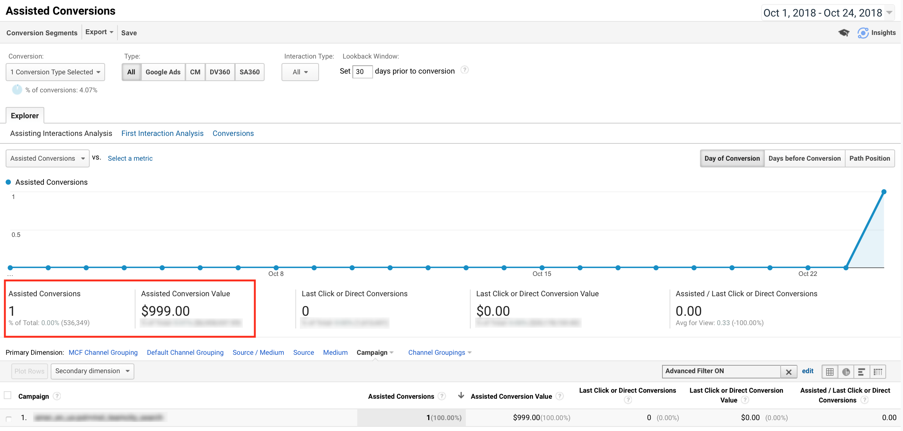
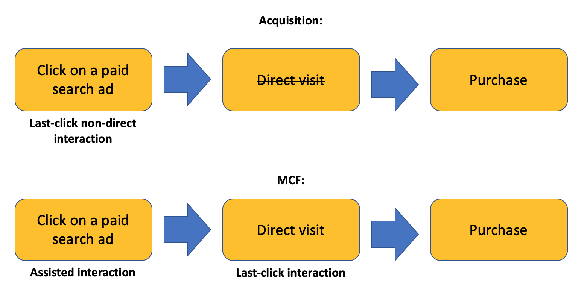

LINKS
January 9, 2019
And Assisted Conversions report is a great place to find this number. However, it’s easy to get confused if you try to compare the number (or value) of last-click conversions from one of the Acquisition reports and the same metric in the Assisted Conversions report.
For example, let's check last-click and assisted conversions for one of the paid search campaigns:

All right, we see one last-click transaction for $999 in the Acquisition report. After that, let’s take a look at the Assisted Conversions report for the very same campaign (to see whether we can attribute some additional value to this campaign):

The report looks weird: we see one assisted conversion for the same amount but where did the last-click conversion go? Should we sum up the conversions from the different reports? Should we count this purchase once? Or are the Google Analytics data all a mess? A difference between conversion data in Acquisition and Multi-Channel Funnels reports can be puzzling.
The explanation is pretty simple and maybe it is worth placing it closer to the beginning of the whole Google Analytics help center. Here it is (Google Analytics Help Article):
"Last Non-Direct Click model is the default model used for non-Multi-Channel Funnels reports."
So Google uses different attribution models in the different report sections. Everywhere except in MCF reports, it’s Last Non-Direct Click, which means that direct conversions will be attributed to the previous non-direct interaction. In MCF reports another model is used which doesn’t have a specific name, but I think it will be okay to call this model multi-channel or assisted.
Thus the same transaction can be attributed as last-click in the Acquisition report and as assisted in the MCF report. To better understand how it works let’s imagine a simple user’s path:
In all the Google Analytics reports except the MCF ones, we will see this purchase attributed to the Paid search ad. But in the MCF report we’ll see this purchase attributed to Direct as last-click and to the Paid search ad as an assisted one:

To summarize: Don’t be confused if the numbers in MCF and non-MCF reports don’t match perfectly. Just keep in mind that Google Analytics uses a Last Non-Direct Click attribution model as a default in all the reports except MCF ones. So most probably in the Assisted Conversions report, some value was simply attributed to the direct interactions.
LINKS